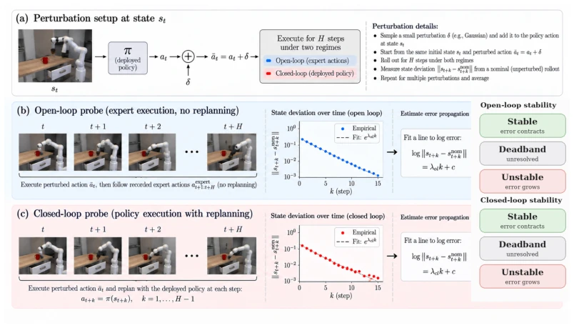
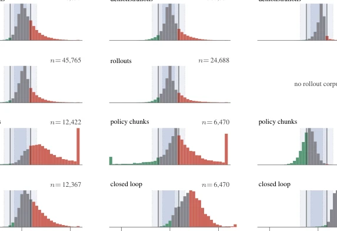
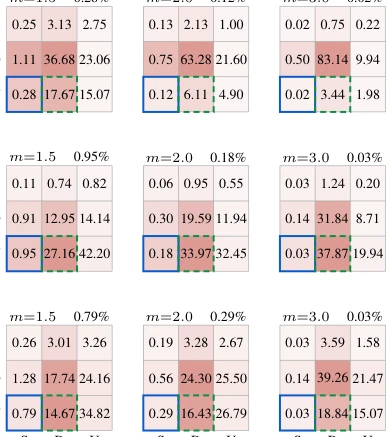

This paper pours cold water on the "stability assumption" of Action Chunking. The academic community generally believes chunking reduces error accumulation, but the authors directly measured whether errors are "dead" or "alive" after entering. The results are stark: stable states are pitifully few, error amplification is the norm. More distressing is that Replanning also failed to save the situation, rarely turning amplification into contraction. This paper is like a calm forensic pathologist, dissecting the corpse of a popular strategy, finding it is actually running naked. Although no new algorithm is provided, it points out the fatal flaw of existing imitation learning in robustness, suggesting explicit training of recovery capability. It tears off the "chunking implies stability" fig leaf, reminding us not to mistake luck for ability.
研究动机Motivation
现有理论（如 Zhang et al., 2025）假设全局收缩率 rho，但这忽略了状态依赖。Lazzati et al., 2026 也假设确定性 Lipschitz 动态。现实中，自由空间与接触状态的误差传播完全不同。现有方法（如 Chopra et al., 2025）用置信度触发重规划，但这只是代理信号，不是真正的误差动力学测量。我们需要知道误差进入系统后的真实命运，而不是假设它会被吸收。此外，Ross & Bagnell (2010) 的误差累积理论也假设了全局性质，而本文指出局部状态才是关键。Chi et al. (2023) 的 Diffusion Policy 虽流行，但未解决此稳定性问题。
Existing theories (e.g., Zhang et al., 2025) assume a global contraction rate rho, but this ignores state dependency. Lazzati et al., 2026 also assumes deterministic Lipschitz dynamics. In reality, error propagation in free space and contact states is completely different. Existing methods (e.g., Chopra et al., 2025) use confidence to trigger replanning, but this is merely a proxy signal, not a true error dynamics measurement. We need to know the true fate of errors after entering the system, rather than assuming they will be absorbed. Furthermore, Ross & Bagnell (2010)'s error accumulation theory also assumes global properties, whereas this paper points out that local states are key. Chi et al. (2023)'s Diffusion Policy, though popular, has not solved this stability problem.
The core is state-level error injection and fitting. 1. Select states (Demo/Rollout/Policy). 2. Inject Gaussian noise delta into the first action. 3. Dual-branch execution: Open-loop (replay remaining chunks) vs Closed-loop (replan per step). 4. Fit log state deviation changing with steps, obtain propagation rate lambda. 5. Set threshold classification (Stable/Unstable/Deadband). 6. Train V-JEPA 2 predictor, observe if observations can infer lambda. The innovation lies in changing stability from a global constant to a state label, and separating the influence of dynamics and strategy. By pairing random numbers to eliminate strategy randomness interference, it ensures the measurement is of error propagation rather than sampling noise.

Figure 1: Per-state measurement of open-loop and closed-loop error propagation. At a state st, a small action perturbation δ produces ˜at = at + δ. We measure the resulting deviation from a nominal rollout under two regimes: (a) open-loop, where the remainder of the recorded action chunk is replayed without replanning, and (b) closed-loop, where the deployed policy replans at each subsequent step. Nominal and perturbed closed-loop branches share the same policy randomness. For each regime, we fit the log state deviation to obtain a propagation rate λol or λcl, which is classified as stable, deadband, or unstable using the amplification and uncertainty gates.
Tested on 12 tasks across Robomimic, MimicGen, and RoboCasa. Metrics are lambda distribution and prediction AUROC. Found that under Open-loop there are many unstable states, while under Closed-loop there are very few stable states. Replanning rarely reverses amplification. The predictor can infer Open-loop stability well, but Closed-loop can only partially recover. Short windows (K=8) show more instability than long windows (K=24), indicating error amplification is pre-loaded. This explains why short chunking may be more dangerous, as it truncates the subsequent saturation phase.

Figure 2: Distributions of the measured propagation rate λmean, pooled within each benchmark family. Columns correspond to robomimic, MimicGen, and RoboCasa; rows correspond to demon- stration, rollout, policy-chunk, and closed-loop stamps. Stable, deadband, and unstable regions are shown by the bar segments. Vertical lines show the reference Gate-1 thresholds ± ln(m)/16 for m ∈{1.5, 2.0, 3.0}; these are shown as a common visual reference and do not replace the window- specific threshold used for labeling. The demonstration, rollout, and closed-loop rates are fitted over K = 24, whereas the policy-chunk rate is capped by the emitted chunk length.

Figure 3: Open-loop × closed-loop label matrices pooled by platform for m = 1.5, 2.0, 3.0. Cells show the percentage of stamps in each joint label pair (S = stable, D = deadband, U = unstable). Blue outlines mark [OL unstable, CL stable] cells; green outlines mark [OL unstable, CL deadband] cells.